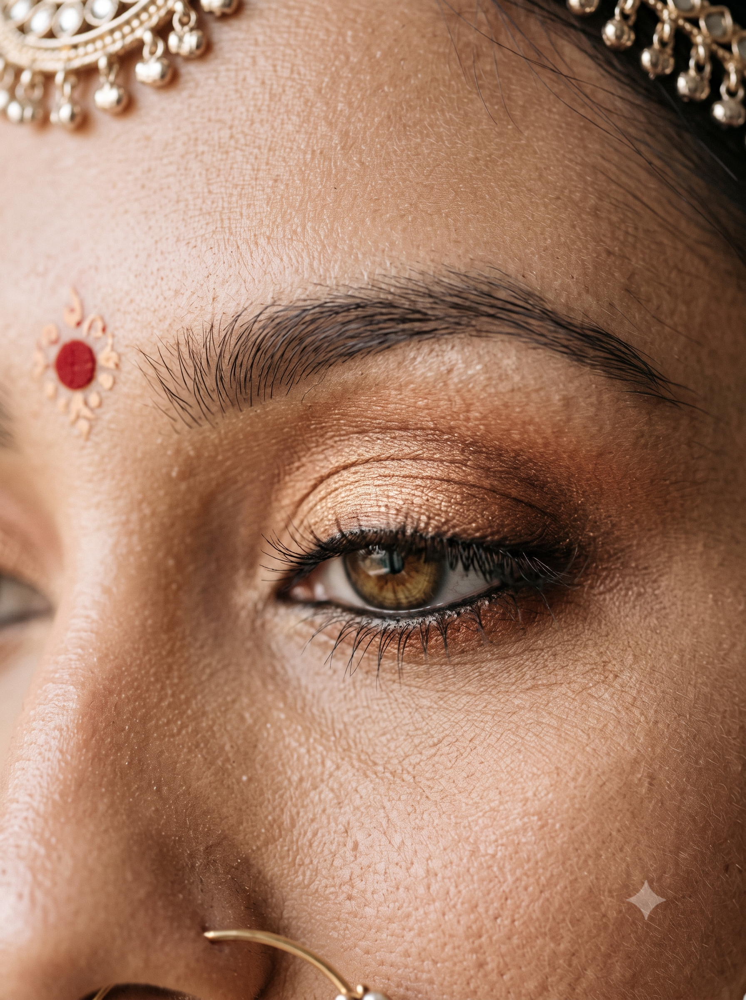

Reduced Motion & Fallback Verification
1. Reduced Motion: Flat Horizontal Scroll-Snap Row (No 3D Tilt, No Autoplay)


2. No-JS Fallback Block
Explore featured bridal and occasion looks in our lookbook:
Open the full lookbook →